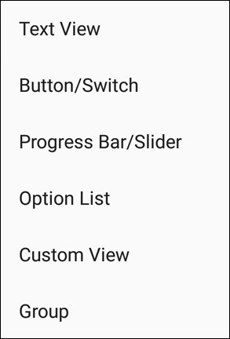
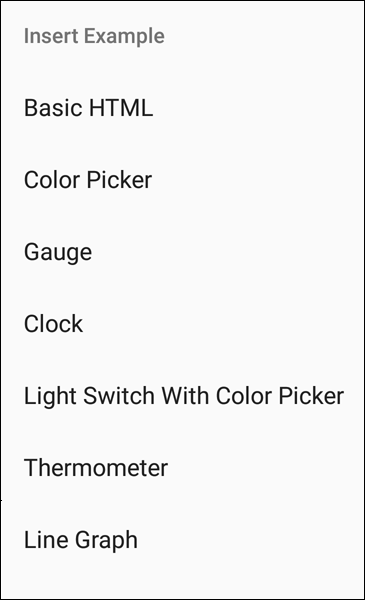
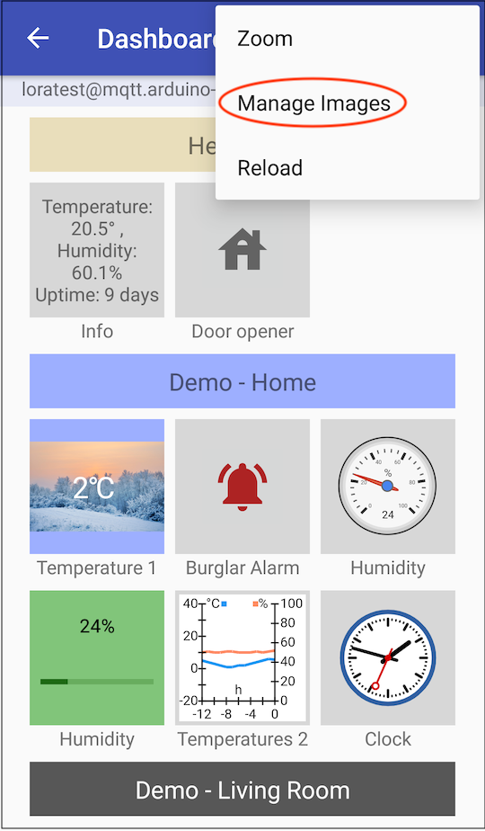
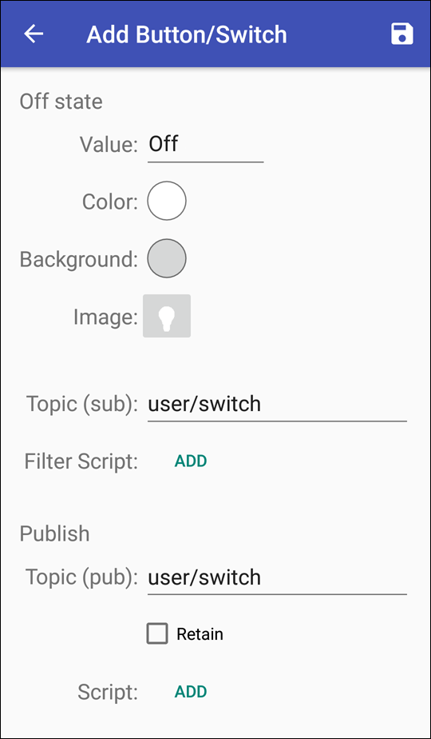

Zusätzlich zur Ansicht „Messages“ bietet die App eine Dashboard-Ansicht. Diese verfügt über eine grafische Benutzeroberfläche, in der sich Anzeige- und Steuerelemente („Dashes“) anlegen lassen, z. B. Temperaturanzeige, Steuerungsschalter für Lampen, Alarmanlagen u. v. a. m.
Die Ansicht „Dashboard“ öffnet sich.
Ein Einblendmenü öffnet sich und bietet verschiedene Vorlagen für Dashes an, welche für die unterschiedlichsten Zwecke eine gute Ausgangsbasis für eigene Lösungen bieten.

| Dash | Erläuterung |
|---|---|
| Text View | Zur Darstellung von Nachrichten in Textform und zur Eingabe von Werten. Siehe dazu den Abschnitt Text View |
| Button/Switch | Erzeugt eine Schaltfläche bzw. einen Schalter. Siehe dazu den Abschnitt Button/Switch |
| Progress Bar/Slider | Stellt einen Wertebereich durch einen Balken dar. Wird ein „Publish Topic“ angegeben, kann mithilfe eines Schiebereglers ein neuer Wert gesetzt und gesendet werden. Siehe dazu den Abschnitt Progress Bar/Slider |
| Option List | Erlaubt die Definition einer beliebigen Menge von Werten. Siehe dazu den Abschnitt Option List |
| Group View | Zur Gruppierung von Dash-Kacheln. Siehe dazu den Abschnitt Group View |
| Custom View | Erlaubt das Anlegen neuer Dashes in HTML. Siehe dazu den Abschnitt Custom View |

Stellt den Inhalt einer Nachricht in Textform dar. Sofern ein „Publish Topic“ angegeben wurde, kann in der Detailansicht ein Wert eingegeben und gesendet werden.

Erzeugt eine Schaltfläche, welche z. B. als Taster fungiert, der bei Betätigung eine Nachricht versendet. Dazu wird in „Off state“ nichts eingetragen. Wird die Schaltfläche als Schalter angelegt, der in Abhängigkeit des Wertes der letzten empfangenen Nachricht seinen Zustand ändert (an/aus), muss im „Off state“ ein Topic eingetragen sein. Damit ließe sich beispielsweise eine Alarmanlage steuern. Ein weiteres Beispiel für einen Dash, der eine Lampe ein- und ausschaltet und gleichzeitig über den aktuellen Schaltstatus informiert, finden Sie hier.
* Wenn als Schalter mit Statusabfrage genutzt, ansonsten optional

Ein Wertebereich wird durch einen Balken dargestellt, wobei der Balken bis zum aktuellen Wert eingefärbt wird (wie bei einer Fortschrittsanzeige). Wurde ein „Publish Topic“ angegeben, kann in der Detailansicht durch einen Schieberegler ein neuer Wert gesetzt und gesendet werden.
* Wenn als Slider zur Übermittlung von Werten genutzt, ansonsten optional
Erlaubt die Definition einer Menge von Werten. Für jede Option kann ein Anzeigewert definiert werden, der anstatt des tatsächlichen Wertes angezeigt wird.
Für eine bessere Übersicht im Dashboard lassen sich Gruppen anlegen, denen einzelne Dashes zugeordnet werden können. Das könnten zum Beispiel folgende Gruppen-Unterteilungen sein: Keller, Erdgeschoss, Obergeschoss, Gartenhaus usw.
Einzelne Dashes lassen sich gruppieren oder können auch einer
anderen Gruppe zugeordnet werden. Dazu tippen
und halten Sie die gewünschte Dash-Kachel („Long Press“), bis ein
 erscheint und Sie
per
erscheint und Sie
per  in den Bearbeitungsmodus
wechseln können.
in den Bearbeitungsmodus
wechseln können.
Über „Group“ und „Pos“ kann die Kachel nun in die gewünschte Position
gebracht werden.

„Custom View“ entspricht einem Standard-Browserfenster, welches
zur Realisierung individueller Oberflächen und Bedienelemente verwendet
werden kann. Hiermit lassen sich beliebige Dashes in HTML anlegen. Das
HTML kann zusätzlich JavaScript-Code enthalten, um Dashes mit individueller
Logik zu programmieren.
Über eine Programmierschnittstelle (API) können MQTT-Nachrichten
empfangen und Einstellungen abgefragt und es kann auf Ressourcen z. B.
importierte Bilder, zugegriffen werden. Siehe dazu Dashboard-Skripte).
Alternativ erhalten Sie durch Tippen auf das Überlaufmenü (
 ) unter „Insert Example“ sieben verschiedene
HTML-Vorlagen (Basic HTML, Color Picker, Gauge,
Clock, Light Switch with Color Picker, Thermometer
und Line Graph), die sich direkt in den Dash einfügen und bearbeiten
lassen.
) unter „Insert Example“ sieben verschiedene
HTML-Vorlagen (Basic HTML, Color Picker, Gauge,
Clock, Light Switch with Color Picker, Thermometer
und Line Graph), die sich direkt in den Dash einfügen und bearbeiten
lassen.
Zum Erstellen eines Customs Views sind fortgeschrittene Kenntnisse in HTML und JavaScript erforderlich. Manche Beispiele verwenden HTML5 und laufen möglicherweise nicht auf älteren Mobilgeräten. In den Beispielen, in denen empfangene Nachrichtendaten verarbeitet werden, muss der Code entsprechend der Datenstruktur des Nachrichteninhalts angepasst werden. Siehe auch Custom View HTML.

Einige Dashes erlauben die Einbindung von Bildern (Hintergründe, Status von Schaltern usw.). Damit eigene Bilder in der App zur Verfügung stehen, müssen diese zuvor in die App importiert werden:

Alle in die App importierten Bilder werden im Fenster „Manage Images“ angezeigt:

Beim Beenden der App werden Bilder, die in keinem Dash verwendet werden, gelöscht. Gleiches gilt auch für Bilder, die ausschließlich im Skriptcode referenziert werden. Um dies zu verhindern, können sie geschützt werden. Im obigen Bild sind bereits zwei zuvor importierte Bilder zu sehen. Beide sind mit solch einem Schutz () versehen.
Die mit einem versehenen Bilder sowie Bilder, die explizit als Hintergrundbild oder Label für die Dashes Button/Switch oder Option List gewählt wurden, bleiben beim Neustart der App erhalten.
Werden Bilder, welche Transparenzen enthalten, über das Feld „Image“ in den Dash eingebunden, so bleiben diese Transparenzen erhalten. Die folgende Abbildung zeigt den Vergleich zwischen einem Bild mit (links) und einem ohne Transparenzen (rechts). Beide Bilder liegen über einem gelb eingefärbten Hintergrund:
Bilder, die in Schaltflächen verwendet werden, können eingefärbt werden. Bilder ohne Transparenz würden komplett mit der gewählten Farbe eingefärbt werden. Die folgende Abbildung basiert auf der vorherigen, hat aber zusätzlich eine rote Einfärbung des Vordergrunds:
Ein Dash soll konfiguriert werden, der eine Lampe ein- und ausschaltet und gleichzeitig über den aktuellen Schaltstatus informiert.

Zu einer Hintergrundfarbe lässt sich zusätzlich auch ein Bild verwenden:
Es öffnet sich das Fenster „Select an Image“, welches eine Reihe von Icons und Symbolen zur Verfügung stellt. Alternativ dazu können auch eigene Bilder verwendet werden, die zuvor in die App importiert wurden (siehe Abschnitt Eigene Bilder in die App importieren).

Nur so kann der Dash den Schaltstatus („Topic (sub)“) vom Server abfragen und Schaltbefehle an den Server geben („Topic (pub)“).